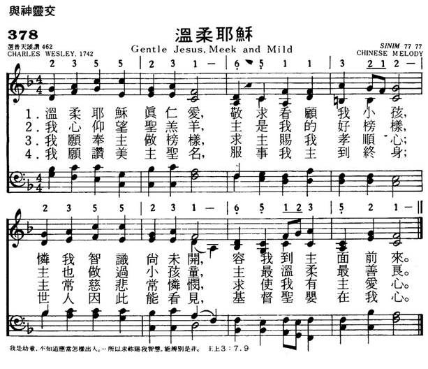

|
|
|
|
1 Gentle Jesus, meek and mild, 2 Lamb of God, I look to Thee; 3 Fain I would be as Thou art; 4 Loving Jesus, gentle Lamb, Amen. |
378温柔耶稣
1.温柔耶稣真仁爱，敬求看顾我小孩，
怜我知识尚未开，容我到主面前来。 2.我心仰望圣羔羊，主是我的号榜样， 主也做过小孩童，主最温柔最善良。 3.我愿奉主做榜样，求主赐我孝顺心， 主常慈悲常怜悯，求使我有主爱心。 4.我愿赞美主圣名，服事我主道终身， 世人因此能看见，基督圣婴在我心。 |
|
https://www.mred365.cn/szxg/7381.html

|
|
|
|
|
-

写诗EP6 | 圣诗分享 《温柔耶稣歌》「Gentle Jesus, Meek and Mild」普天颂赞557 https://youtu.be/fZZSv3PqE0g -
GLASGOW HIGH SCHOOL-GENTLE JESUS,MEEK AND MILD https://youtu.be/TtxI0tynysI
LX1540
Gentle Jesus, Meek And
Mild
378温柔耶稣
| Text: | Gentle Jesus, Meek and Mild |
| Author: | Charles Wesley |

Notes
Gentle Jesus,
meek and mild. C. Wesley. [A Child's Prayer.] First
published in Hymns & Sacred Poems, 1742; and again
in Hymns for Children, 1763, in 7 stanzas of 4
lines. Following it is another hymn, marked pt. ii, and beginning, "Lamb
of God, I look to Thee," also in 7 stanzas of 4 lines, thus accounting
for the statement sometimes made that the original is in 14 stanzas.
Centos from both parts are found in most collections for children in
English-speaking countries, and are exceedingly popular with the young.
The construction of each cento may be traced by a reference to the
original text in Poetical Works, 1868-72, vol. vi.
p. 441, No. 336. "Lamb of God," &c, in the Methodist Sunday
School Hymn Book, 1879, is entirely from pt. ii., whilst "Gentle
Jesus, meek and mild," is compiled from both.
Other arrangements are:—
(1) “Loving Jesus, gentle Lamb," in the American Methodist Episcopal Hymns,
1849; and (2) "Holy Jesus, Saviour mild," in the Bonchurch
Hymn Book, 1868.
--John Julian, Dictionary of Hymnology (1907)
| Text Information | |
|---|---|
| First Line: | Wen-rou Ye-su zhen ren-ai (Gentle Jesus, meek and mild) |
| Title: | Gentle Jesus, Meek and Mild (Wen-rou Ye-su zhen ren-ai) |
| English Title: | Gentle Jesus, meek and mild |
| Author: | Charles Wesley, 1707-1788 |
| Language: | English; Mandarin |
| Publication Date: | 2000 |
| Scripture: | |
| Topic: | Hymns for Children; Discipleship; Images of God, Christ and the Holy Spirit: Lamb (1 more...) |
| Copyright: | Tr. © Chines Christian Literature Council, HK |
Tune Information
| Title: | SINIM |
| Place Of Origin: | China |
| Incipit: | 13552 31651 13212 |
| Key: | F Major |
| Source: | Chinese |
| Copyright: | Music from "Hymns of Universal Praise" revised edition. © 1977 by the Chinese Christian Literature Council Ltd., Hong Kong. |
| Short Name: | W. H. Wong |
| Full Name: | Wong, W. H. (Wing-hee Heyward), 1917- |
| Birth Year: | 1917 |
| Tune: | SINIM |
| Arranger: | Lujia Xu |
| Tune: | SIMPLICITY |
| Composer: | John Stainer |

| Short Name: | John Stainer |
| Full Name: | Stainer, John, 1840-1901 |
| Birth Year: | 1840 |
| Death Year: | 1901 |